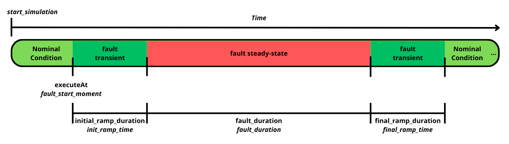
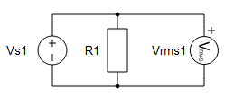
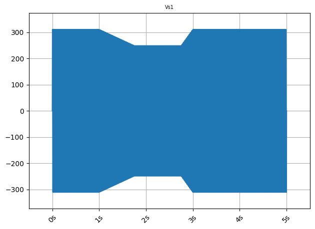

grid_fault¶
- typhoon.test.sources.grid_fault(sources, fault_duration, rms_pu=None, freq_pu=None, phase_shift=None, initial_ramp_duration=0, final_ramp_duration=0, ramp_type='lin', executeAt=None)¶
Generic function for creating grid faults. The fault is created at the moment specified with the executeAt argument. After the specified fault duration, it is removed by returning all sources’ settings to pre-fault values. The image shows where which of the time parameters are applied during function execution.

- Parameters:
sources (str, list) – Name of the source/sources which represent the grid given as a string or list of strings.
fault_duration (float, pandas.Timedelta) – Duration of the fault in seconds. Refers to the duration that the fault will be applied on the voltage sources between the transient times.
rms_pu (float, list) – Voltage rms or list of voltage rms per unit values during the fault, based on the pre-fault value of the appropriate voltage source; default value is None and in that case pre-fault rms values are applied.
freq_pu (float, list) – Frequency or list of frequency per unit values during the fault, based on the pre-fault value of the appropriate voltage source; default value is None and in that case, pre-fault frequency values are applied.
phase_shift (float, list) – Phase shift or list of phase shift values in the moment of the fault; default value is None and in that case phase shifts are not applied to voltage sources. The values are given in degrees.
initial_ramp_duration (float, pandas.Timedelta) – Time needed for the voltage source to get from pre-fault to fault state.
final_ramp_duration (float, pandas.Timedelta) – Time needed for the voltage source to go back to pre-fault state from the fault state.
ramp_type (str) – Type of the initial and final ramp. Supported values are ‘lin’ (linear interpolation) and ‘exp’ (first order system response - ramp time equals to 7 tau).
executeAt (float, pandas.Timedelta) – Time moment in which fault is applied. If current simulation time is bigger than fault time, fault is applied immediately.
- Returns:
None
- Return type:
This function has no return.
Examples
This example will be executed inside a pytest test, running with the follow schematic:

The libraries in the following test code are imported, and the model created is compiled and loaded. Adjust the path for the schematic before running the test:
>>> from typhoon.api import hil >>> from typhoon.api.schematic_editor import model >>> from typhoon.test import capture as cap >>> from typhoon.test.sources import grid_fault >>> >>> def test_grid_fault_docstring(): >>> model_name_1 = "grid_fault_test.tse" >>> >>> # Absolute path of the schematic >>> model_path_1 = str(file_path / "hil_model" / model_name_1) >>> compiled_model_path_1 = model.get_compiled_model_file(model_path_1) >>> >>> model.load(model_path_1) >>> model.compile() >>> >>> hil.load_model(compiled_model_path_1, vhil_device=True) >>> # The test continue in the next sample (1/3)
A fault is applied to the
Vs1voltage source. The voltage value is measured together with the RMS value. Voltage and fault parameters can be set as follows:>>> # Test part 2/3 >>> # Initial voltage source configuration >>> Vnom = 220 # Nominal Voltage >>> fnom = 60 # Nominal frequency >>> phase_nom = 0 # Nominal phase >>> >>> source = "Vs1" >>> >>> # Grid Fault parameters >>> rms_pu = 0.8 # Means that voltage rms value will drop to 80% of nominal value >>> >>> ## Time periods >>> fault_duration = 1 # time when the fault creation starts >>> init_ramp_time = 0.75 # fault creation time >>> final_ramp_time = 0.25 # fault removal time >>> fault_start_moment = 1 # fault duration >>> >>> # Voltage source initialized >>> hil.set_source_sine_waveform(source, rms=Vnom, frequency=fnom, phase=phase_nom) >>> # The test continue in the next sample (2/3)
After the parameterized fault is applied, a capture is created as an Allure report and/or saved in the
grid_fault_signals.h5file:>>> # Test part 3/3 >>> # create fault on the three-phase voltage source; >>> grid_fault(sources=source, >>> rms_pu=rms_pu, >>> fault_duration=fault_duration, >>> initial_ramp_duration=init_ramp_time, >>> final_ramp_duration=final_ramp_time, >>> ramp_type='lin', >>> executeAt=fault_start_moment) >>> >>> cap.start_capture( >>> duration=5, >>> signals=[source, 'Vrms1'], >>> fileName='grid_fault_signals.h5' >>> ) >>> >>> hil.start_simulation() >>> cap.get_capture_results(True) >>> # The test is over (3/3)
Voltage Source
Vs1capture: